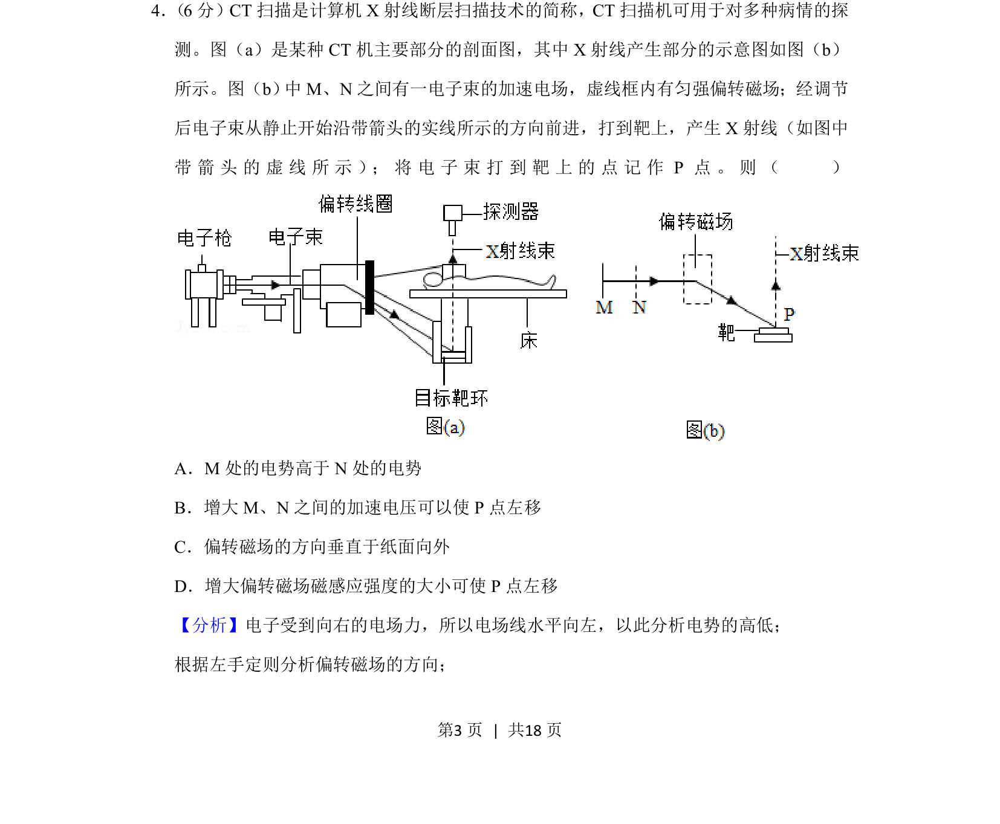
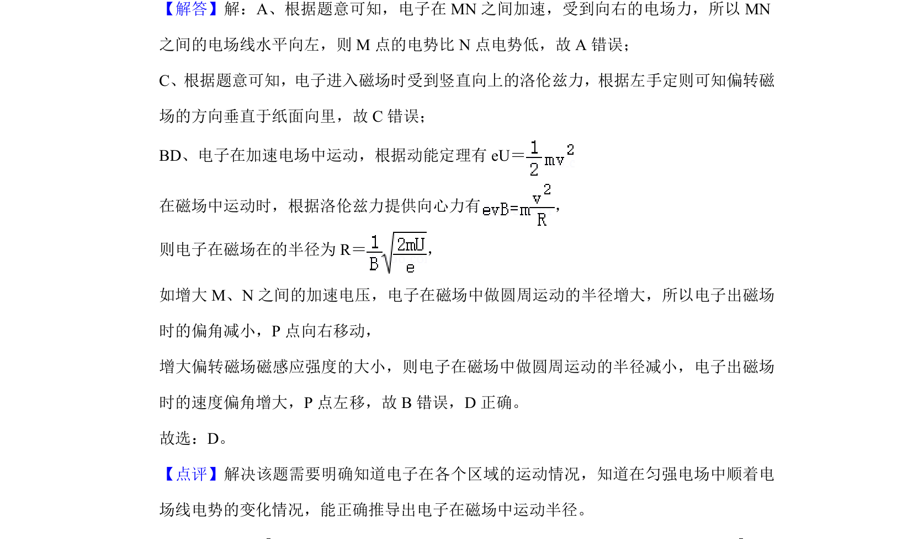

考点：带电粒子加速 电势判断 左手定则 磁场偏转

电场加速与磁场偏转的综合分析，涉及电势高低和偏转方向判断。

📄 原 PDF 第 3 页：
素材/真题/吉林/2008-2024·（吉林）物理高考真题/2020年高考物理试卷（新课标Ⅱ）（解析卷）.pdf
4． （6分）CT扫描是计算机X射线断层扫描技术的简称，CT扫描机可用于对多种病情的探 测。图（a）是某种CT机主要部分的剖面图，其中X射线产生部分的示意图如图（b） 所示。图（b） 中M、N之间有一电子束的加速电场，虚线框内有匀强偏转磁场；经调节 后电子束从静止开始沿带箭头的实线所示的方向前进，打到靶上，产生X射线（如图中 带 箭 头 的 虚 线 所 示 ）； 将 电 子 束 打 到 靶 上 的 点 记 作P点 。 则 （ ） A．M处的电势高于N处的电势 B．增大M、N之间的加速电压可以使P点左移 C．偏转磁场的方向垂直于纸面向外 D．增大偏转磁场磁感应强度的大小可使P点左移
【分析】电子受到向右的电场力，所以电场线水平向左，以此分析电势的高低； 根据左手定则分析偏转磁场的方向；